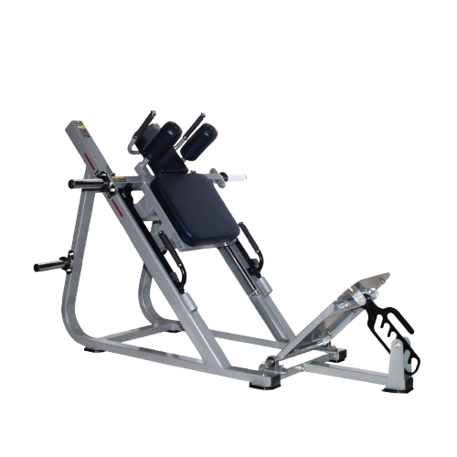
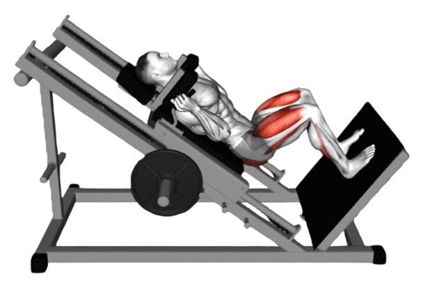
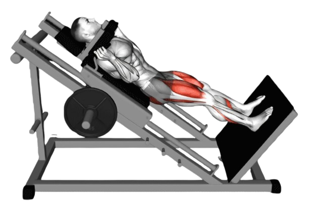

핵스쿼트

- 기계에 서서 어깨를 패드 아래에 두고 발을 발판에 올린다.
- 천천히 무릎을 구부리며 발판을 따라 아래로 내려간다. 이때 허벅지가 바닥과 평행이 될 때까지 내려가는 것이 좋다. 내려갈 때 무릎이 발끝을 넘지 않도록 주의한다
- 이때 호흡은 마신다.
- 발바닥 전체를 사용해 강하게 밀어내면서 시작 자세로 돌아온다. 무릎을 완전히 펴지 말고 살짝 구부린 상태로 유지한다.
- 이때 호흡은 뱉는다.

주의사항
- 허리가 들리거나 과도하게 구부러지지 않도록 주의한다.
- 지나치게 무거운 중량은 잘못된 자세를 유발할 수 있어 부상의 원인이 된다.
운동부위 및 효과
- 되태사두근, 둔근, 햄스트링, 내전근, 종아리 근육
- 하체 근육은 큰 근육군이기 때문에 핵스쿼트를 통해 칼로리 소모가 증가한다. 체지방 감소와 체중 관리에도 도움이 된다.